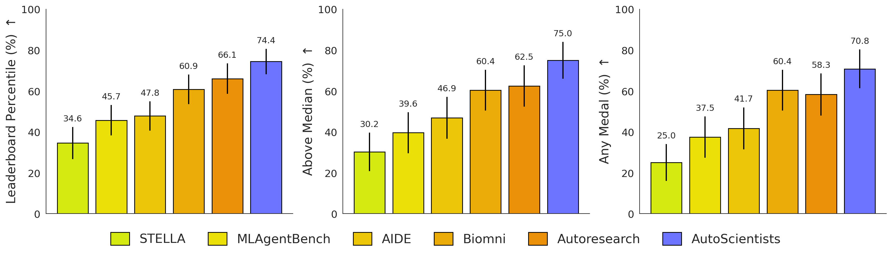

If nine research agents share a compute budget, should they run experiments independently or discuss what to run first? AutoScientists gives agents a shared record, lets them critique proposals before spending compute, and allows teams to reorganize when progress stalls. On BioML-Bench, the system raises the mean leaderboard percentile from 66.07 to 74.40 compared with a single-agent baseline. In GPT training optimization, it needs fewer trials to reach the same validation target. The comparisons match experimental resources, while the multi-agent system consumes more LLM tokens. Sections 4–5
This reading follows the arXiv v2 revision by Shanghua Gao, Ada Fang, and Marinka Zitnik, dated November 10, 2026.
1. Understanding the Topic: What Should the Next Experiment Test?
Suppose a team has a limited budget to improve an image classifier. It could try stronger data augmentation, different architectures, or another optimizer. After several unproductive augmentation trials, should it refine the settings again or spend the next run on a different hypothesis? An experiment log from a colleague who already tested a similar configuration could spare the team a run.
In long-running computational experimentation, new evidence changes which directions are worth pursuing. A system needs to maintain competing directions and use successes and failures to allocate the next trial. It also needs to check small gains, because random training variation can make a lucky run the baseline that the entire team then builds on.
2. Related Work: From One Search Trajectory to Team Coordination
| Work | How it organizes research | Connection to this paper |
|---|---|---|
| Autoresearch | One agent edits a training program, runs it, keeps improvements, and iterates | The direct baseline for comparing how many trials are needed to reach the same validation loss |
| AI co-scientist | Specialized roles propose, critique, and compare scientific hypotheses | Both discuss proposals before execution. Here, discussion can leave several experimental directions active |
| EvoScientist | Stores ideation and experimental experience separately for retrieval on later tasks | EvoScientist studies reuse across tasks. AutoScientists studies how teams share evidence and change roles during a long run |
3. Research Questions: What Can Team Organization Improve?
We group the experimental questions as follows:
- With similar experimental resources, can self-organizing teams train better models and reach the same validation target in fewer trials?
- Starting from a strong program, can several active research directions continue to yield improvements?
- What do analysts, peer feedback, team reorganization, and a shared experimental record contribute? Which comparisons separate their effects? Section 4 and Appendix B
4. Understanding the Method: How Do Teams Reorganize Around Evidence?
Step 1. Discuss directions and form teams. Inputs include a task, data, an evaluation protocol, and optionally a starting program. Agents read the current best program and forum history, then propose and critique directions. The last agent in the discussion round consolidates the roster, which agents adopt on their next periodic invocation. The total agent count is configured before the run. The default is three analysts and six experiment agents. A deterministic monitor invokes them, and discussion determines directions and assignments. Sections 3.2 and 4.1 and Appendix A
Step 2. Use shared state to choose experiments. Analysts read the log and queue proposals, prioritizing underexplored directions. Experiment agents claim proposals, modify the current best program, train it, and record outcomes. Shared state includes the best program, experiment log, forum, queues, and records of failed directions. Teams can check for duplicate proposals, question a design, or build on another team's findings. The forum and log let separate teams see one another's evidence. Section 3.2 and Appendix A.4–A.7
Step 3. Confirm small gains and reorganize when progress stalls. The authors use repeated seeds to estimate how much scores vary for the same program. A gain above the noise band can be accepted immediately. A smaller gain must also beat the current best on a second seed. The paper gives roughly 10 recent experiments without improvement as an example of stagnation. Teams can reopen discussion and propose merging, splitting, or changing direction, with endorsement from the affected teams. Deliverables include the best program, a model card, and a report of research findings. The experimental log preserves the search history. Section 3.2 and Appendix A.6
5. Experimental Design and Results: How Far Does a Fixed Budget Go?
Main Evaluation 1: Models on BioML-Bench
The 24 tasks cover biomedical imaging (4), drug discovery (9), protein engineering (6), and single-cell omics (5). AutoScientists and its main baseline, Autoresearch, use the same Claude Code / Claude Sonnet 4.6 backend. Both use one H100 per task, with 16 hours for imaging and 4 hours for other domains. Imaging results for several other baselines use published benchmark values, while their corresponding non-imaging runs were repeated. Imaging, drug discovery, and single-cell tasks use held-out test sets. Protein engineering follows the benchmark's cross-validation protocol. Sections 4.1–4.2 and Appendix F.1

| Task group | Autoresearch mean percentile | AutoScientists mean percentile |
|---|---|---|
| All (24) | 66.07 | 74.40 |
| Biomedical imaging (4) | 39.60 | 45.75 |
| Drug discovery (9) | 46.16 | 64.52 |
| Protein engineering (6) | 96.97 | 96.97 |
| Single-cell omics (5) | 86.00 | 88.00 |
The overall difference is 8.33 percentile points. Drug discovery shows the largest gap, and the systems tie on protein engineering. AutoScientists completes 24 of 24 tasks, with 75.0% above the public leaderboard median. Mean leaderboard percentile, completion rate, and above-median rate are separate measures. BioML-Bench training runs sequentially on one GPU per task, so this comparison mainly reflects the team's choice of which experiments to run. Figure 3, Table 1, and Section 5
Main Evaluation 2: How Many Trials Does GPT Training Optimization Need?
Each trial trains on one H100 for 5 minutes. Search repeatedly uses validation bits per byte (val_bpb, lower is better). Starting from the same program, AutoScientists reaches about 0.978 in 34 trials, compared with 65 for Autoresearch. The reported 1.9× is the ratio of trial counts. At a fixed 50 trials, the systems reach 0.9777 and 0.9790, respectively. Figure 4 and Appendix Table S2
Starting from the same stronger 0.9777 program with access to the same record of failed directions, AutoScientists accepts 7 improvements in 93 trials and reaches 0.9730. Autoresearch accepts 0 in 100 trials and retains the starting program. These scores come from validation data used during the search. A separate experiment holds the team fixed and changes GPU count. Measured wall-clock time per trial drops from 9.7 minutes on one GPU to 4.4 minutes on four GPUs. That experiment measures the time savings from parallel hardware. Section 4.3 and Appendix B.3
Main Evaluation 3: Transfer on ProteinGym
The authors start from Kermut, search on one development assay, and freeze the resulting method for evaluation across 217 assays under the benchmark protocol. They report that mean Spearman correlation rises from 0.657 to 0.700, an absolute gain of 0.043 and a relative gain of about 6.5%. MSE increases by 0.006. This shows a gain in ranking quality alongside a trade-off in numerical prediction error. The 217-assay aggregate includes the development assay. The evaluation measures predictive performance on a computational benchmark. Section 4.4 and Table 2
Ablations: Tasks Depend on Different Parts of Collaboration
The full setup leads on the primary metric for each of the four representative tasks in Table 3. Removing analysts reduces TDC-hERG AUROC from 0.867 to 0.738. Fixing team membership raises GPT validation loss from 0.9777 to 0.9833. The appendix also allows teams to form initially but disables later reorganization, yielding 0.9806. Giving the ablation the full system's initial teams while still disabling reorganization yields 0.9794. These comparisons distinguish initial assignments from mid-run changes. The full and ablated trajectories in Appendix D differ in length, so their endpoints need to be read alongside the run budgets. The independent-agent condition removes both feedback and shared state, so its result combines those changes. Table 3 and Appendices B.2 and D
6. Our Reflections
Topic Reflection: What Is This Field Studying?
The paper makes one research decision testable: which hypothesis should get the next unit of compute? A failed run can change another team's choice if everyone can see the record. Read alongside EvoScientist, this highlights two time scales. AutoScientists uses fresh evidence within the same search, while EvoScientist preserves experience for a later project.
Limitation Reflection: What Remains Unresolved?
Experimental budgets and total costs differ. The principal comparisons match hardware and training windows, while discussion, critique, and reorganization consume more LLM tokens. Repeated validation changes what the score can establish. GPT progress is measured on the validation data used for search, and the best score can depend on seed and trajectory. Ablation effects depend on task and configuration. The paper provides extra controls and some independent runs, with further paired repetitions needed to determine when the gain from reorganization justifies its cost. Section 5 and Appendices C, D, and F
Solution Reflection: What Directions Could Address These Issues?
With the same base model and starting program, compare systems under two budgets. Match GPU time in one comparison and total GPU and LLM cost in the other. Report trials and elapsed time to target. Keep an independent final test set and validate the best program with pre-specified seeds. Finally, start from identical teams in paired runs that allow or disallow reorganization, then track redundant experiments and gains around each team change to see whether it redirected compute to more productive directions.
Figures are from AutoScientists v2 by Gao, Fang, and Zitnik and reproduced under CC BY 4.0.